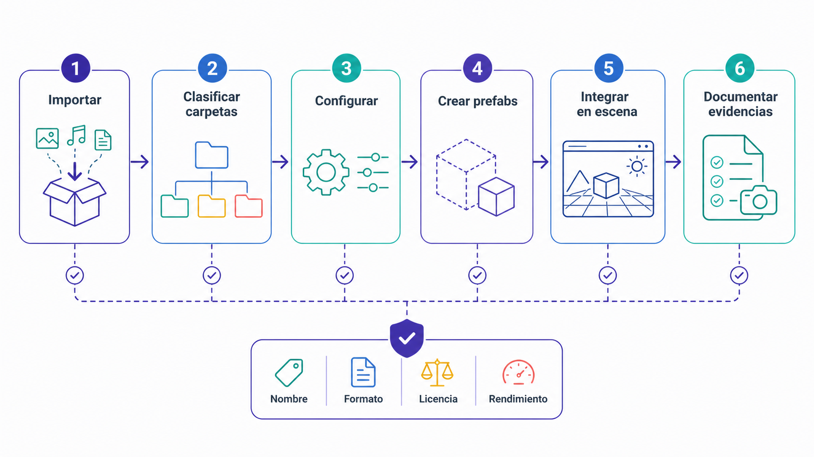
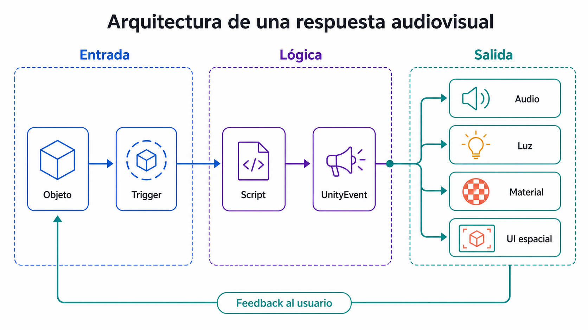
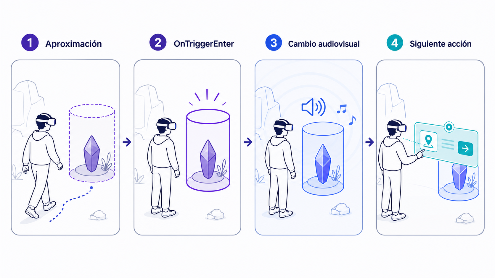

Asset
Cualquier recurso importado o creado dentro del proyecto Unity: modelos 3D, texturas, materiales, sonidos, imágenes, scripts, prefabs o escenas.
Integrar recursos visuales, sonoros e interactivos en una escena coherente, con respuesta y una pequeña secuencia interactiva.
En este tercer laboratorio se parte de la escena creada en el Laboratorio 2 para transformarla en una escena más rica desde el punto de vista visual, sonoro e interactivo. El objetivo ya no es únicamente tener una sala XR funcional, sino empezar a construir una secuencia interactiva con intención: el usuario deberá poder localizar un objeto, cogerlo, colocarlo en un soporte y activar una respuesta audiovisual (proyección, sonido, iluminación o aparición de información). Este laboratorio conecta directamente con la Tarea 2 y prepara el desarrollo de un prototipo funcional posterior.
Cualquier recurso importado o creado dentro del proyecto Unity: modelos 3D, texturas, materiales, sonidos, imágenes, scripts, prefabs o escenas.
Objeto reutilizable. Permite guardar una configuración completa de un GameObject para usarla varias veces en la escena o en otras escenas.
Interfaz situada dentro del espacio 3D. En XR conviene colocarlas en el mundo para que formen parte de la experiencia, no pegadas a la pantalla.
Collider configurado para detectar entrada, permanencia o salida de otros objetos sin producir una colisión física tradicional.
Respuesta visual que indica al usuario que un objeto puede ser usado o que una acción ha tenido efecto: cambio de color, emisión, outline, iluminación o animación.
Conjunto de acciones conectadas entre sí. Mínima en este lab: el usuario coge un objeto → lo coloca en un soporte → se activa una respuesta audiovisual.
Verificar Universal RP para materiales y XR Interaction Toolkit e Input System para interacción y Canvas XR. Shader Graph se comprueba si se utiliza para el respuesta visual; audio, colliders y triggers no requieren nuevos paquetes.
Abrir Package Manager → In Project. Si los paquetes requeridos ya están presentes, no reinstalarlos. Si falta alguno, buscarlo en Unity Registry e instalar la versión compatible del curso, volver a In Project y comprobarlo. Consultar la base del Lab 1 y su preparación XR. Esta práctica reutiliza el proyecto y no requiere AR ni DOTS.
# ES: La línea siguiente inicia una categoría o nivel principal del esquema.
# EN: The following line starts a main category or level in the diagram.
Assets/
└── _Project/
├── Scenes/
├── Scripts/
├── Prefabs/
├── Materials/
├── Models/
├── Textures/
├── Audio/
└── Documentation/
Construye tres elementos sencillos que se activarán cuando el usuario coloque el objeto correcto sobre el soporte: un panel visual, una luz y un sonido breve.
Conecta el soporte, las tres respuestas del Paso 8 y el objeto manipulable. El script detectará la entrada del objeto correcto y activará los efectos.
// Importa los tipos y APIs utilizados por este script.
using UnityEngine;
// Detecta el objeto correcto y activa una respuesta audiovisual.
public class ObjectPlacementTrigger : MonoBehaviour
{
[Header("Objeto esperado")]
// Guarda la etiqueta que debe tener el objeto activador.
[SerializeField] private string requiredTag = "InteractiveObject";
[Header("Respuesta visual")]
// Referencia el objeto visual que se mostrará al activar la secuencia.
[SerializeField] private GameObject projectionObject;
// Referencia la luz que se encenderá durante la respuesta.
[SerializeField] private Light activationLight;
[Header("Respuesta sonora")]
// Referencia el componente que reproducirá el sonido.
[SerializeField] private AudioSource audioSource;
// Guarda el clip reproducido al completar la activación.
[SerializeField] private AudioClip activationClip;
// Registra si la secuencia ya se ejecutó para evitar repeticiones.
private bool activated = false;
// Unity ejecuta este método cuando otro Collider entra en el trigger.
private void OnTriggerEnter(Collider other)
{
// Comprueba si la secuencia ya se ejecutó.
// Si ya estaba activada, termina aquí para evitar repetir luces y sonidos.
if (activated)
{
// Termina el método sin ejecutar las instrucciones posteriores.
return;
}
// Comprueba que el objeto que entró en la zona tenga la etiqueta esperada.
// Solo el objeto correcto puede iniciar la secuencia de activación.
if (other.CompareTag(requiredTag))
{
activated = true;
ActivateSequence();
}
}
// Activa de forma segura las respuestas visuales y sonoras.
private void ActivateSequence()
{
// Comprueba que el objeto de proyección esté asignado en el Inspector.
// Si falta, se omite este efecto visual y se evita un error.
if (projectionObject != null)
{
projectionObject.SetActive(true);
}
// Comprueba que la luz de activación esté asignada en el Inspector.
// Si existe, puede encenderla; si falta, continúa sin provocar un error.
if (activationLight != null)
{
activationLight.enabled = true;
}
// Comprueba que el reproductor de audio y el clip de sonido estén asignados.
// Si falta alguno de los dos, el sonido no se reproduce y se evita un error.
if (audioSource != null && activationClip != null)
{
// Reproduce el clip una vez sin sustituir permanentemente el clip del AudioSource.
audioSource.PlayOneShot(activationClip);
}
}
}Creación del código: abrir un editor de código y guardar cada clase pública del ejemplo en el archivo .cs indicado dentro de Assets/_Project/Scripts (o su subcarpeta DOTS). Copiar el bloque correspondiente, guardar y volver a Unity. Esperar a la compilación y comprobar Window → General → Console. Añadir al Inspector únicamente scripts MonoBehaviour; los tipos ECS de datos y sistemas no se arrastran como componentes de GameObject.

// Importa los tipos y APIs utilizados por este script.
using UnityEngine;
// Cambia el material para comunicar los estados de interacción XR.
public class XRVisualFeedback : MonoBehaviour
{
[Header("Renderer")]
// Referencia el Renderer cuyo material cambiará.
[SerializeField] private Renderer targetRenderer;
[Header("Materiales")]
// Guarda el material utilizado en el estado normal.
[SerializeField] private Material defaultMaterial;
// Guarda el material mostrado cuando el puntero pasa sobre el objeto.
[SerializeField] private Material hoverMaterial;
// Guarda el material mostrado mientras el objeto está seleccionado.
[SerializeField] private Material selectedMaterial;
// Unity ejecuta este método al inicializar el componente.
private void Awake()
{
// Comprueba si todavía no se ha asignado un Renderer en el Inspector.
// Si está vacío, intenta obtener automáticamente el Renderer del mismo objeto.
if (targetRenderer == null)
{
targetRenderer = GetComponent<Renderer>();
}
}
public void OnHoverEnter()
{
SetMaterial(hoverMaterial);
}
public void OnHoverExit()
{
SetMaterial(defaultMaterial);
}
public void OnSelectEnter()
{
SetMaterial(selectedMaterial);
}
public void OnSelectExit()
{
SetMaterial(defaultMaterial);
}
private void SetMaterial(Material material)
{
// Comprueba que existan tanto el Renderer como el material que se quiere aplicar.
// El cambio visual solo se realiza cuando ambas referencias son válidas.
if (targetRenderer != null && material != null)
{
targetRenderer.material = material;
}
}
}Creación del código: abrir un editor de código y guardar cada clase pública del ejemplo en el archivo .cs indicado dentro de Assets/_Project/Scripts (o su subcarpeta DOTS). Copiar el bloque correspondiente, guardar y volver a Unity. Esperar a la compilación y comprobar Window → General → Console. Añadir al Inspector únicamente scripts MonoBehaviour; los tipos ECS de datos y sistemas no se arrastran como componentes de GameObject.

<!-- ES: La sección siguiente debe completarse con la información correspondiente del proyecto. -->
<!-- EN: Complete the following section with the corresponding project information. -->
# Laboratorio 3 — Secuencia interactiva
<!-- ES: La sección siguiente debe completarse con la información correspondiente del proyecto. -->
<!-- EN: Complete the following section with the corresponding project information. -->
## Descripción de la escena
Breve explicación de la escena creada.
<!-- ES: La sección siguiente debe completarse con la información correspondiente del proyecto. -->
<!-- EN: Complete the following section with the corresponding project information. -->
## Assets visuales usados
Lista de modelos, texturas, materiales, iconos o imágenes utilizadas.
<!-- ES: La sección siguiente debe completarse con la información correspondiente del proyecto. -->
<!-- EN: Complete the following section with the corresponding project information. -->
## Assets sonoros usados
Lista de sonidos utilizados y función de cada uno.
<!-- ES: La sección siguiente debe completarse con la información correspondiente del proyecto. -->
<!-- EN: Complete the following section with the corresponding project information. -->
## Secuencia interactiva
1. El usuario localiza el objeto.
2. El usuario coge el objeto.
3. El usuario coloca el objeto en el soporte.
4. Se activa una proyección, sonido o cambio de iluminación.
<!-- ES: La sección siguiente debe completarse con la información correspondiente del proyecto. -->
<!-- EN: Complete the following section with the corresponding project information. -->
## Scripts utilizados
Lista de scripts y función de cada uno.
<!-- ES: La sección siguiente debe completarse con la información correspondiente del proyecto. -->
<!-- EN: Complete the following section with the corresponding project information. -->
## Problemas encontrados
Errores técnicos y soluciones aplicadas.
<!-- ES: La sección siguiente debe completarse con la información correspondiente del proyecto. -->
<!-- EN: Complete the following section with the corresponding project information. -->
## Relación con la Tarea 2
Explicación de cómo esta práctica prepara la entrega evaluable.Is Trigger no está activado, el objeto no tiene Collider/Rigidbody, falta la etiqueta InteractiveObject o el script está en el objeto equivocado.
El trigger es demasiado grande o está mal colocado.
Falta AudioSource, no se ha asignado AudioClip, el volumen está a cero, el evento no se llama o el script no tiene referencias asignadas.
La referencia a la luz no está asignada, la luz ya estaba activa, la intensidad es demasiado baja o el objeto de luz está desactivado.
No se asignaron materiales, el Renderer no está asignado, los eventos del XR Grab Interactable no están conectados o el objeto no usa el material esperado.
El Canvas no está en World Space, falta Tracked Device Graphic Raycaster, falta XR UI Input Module, el Ray Interactor no interactúa con UI o no hay EventSystem.
El prefab hace referencia a objetos de escena, se movieron materiales/sonidos/scripts o el objeto fue convertido en prefab antes de configurarse correctamente.
Objeto interactivo con respuesta múltiple. Crear un objeto que, al ser seleccionado o colocado en el soporte, dispare varias respuestas combinadas. Debe estar convertido en prefab y guardado en Project → Assets → _Project → Prefabs con el nombre PFB_Object_MultiFeedback.
La visita a la página se registra como progreso de lectura. Esta confirmación registra la sesión como completada.